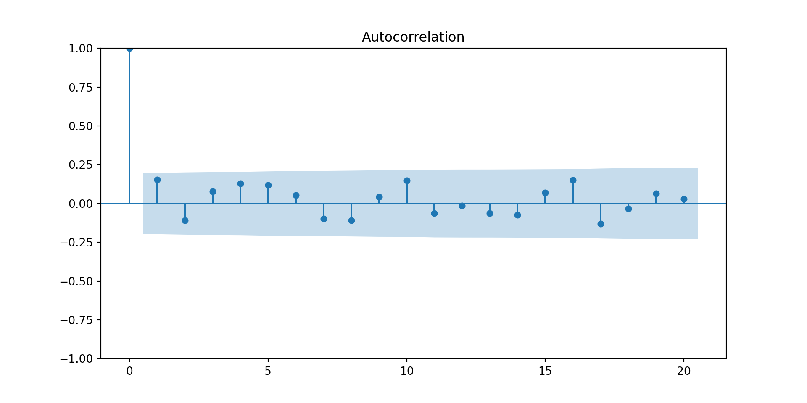
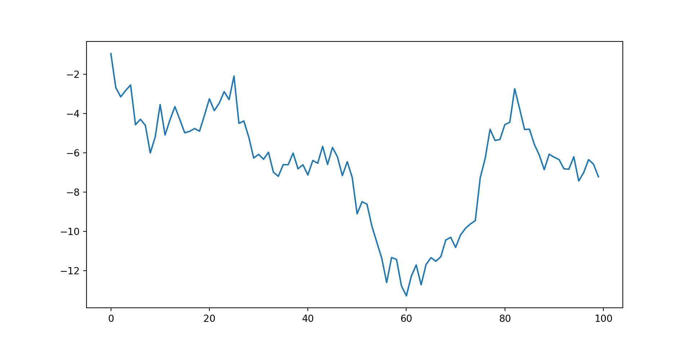
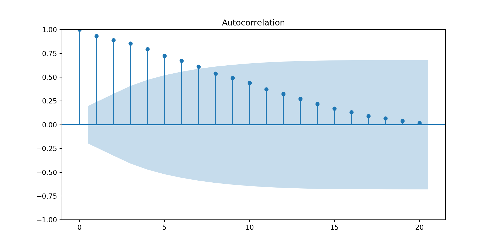
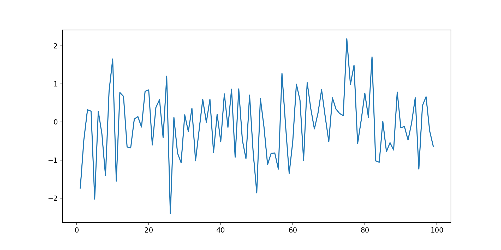
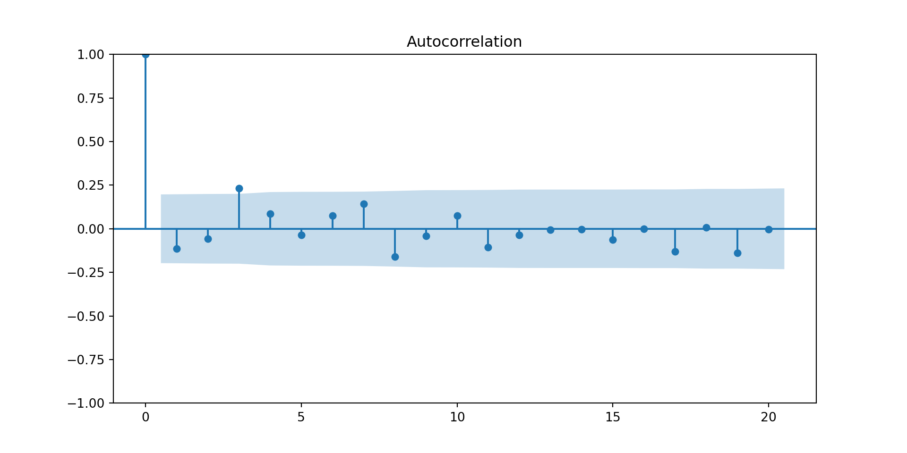
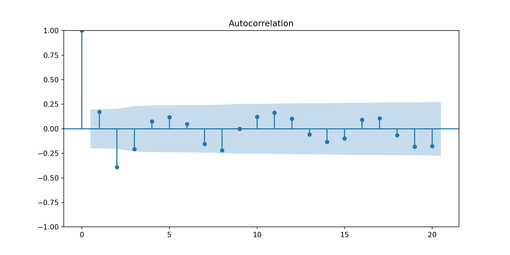
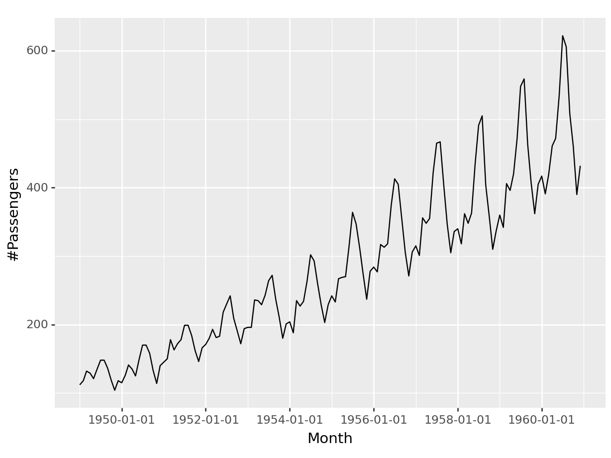
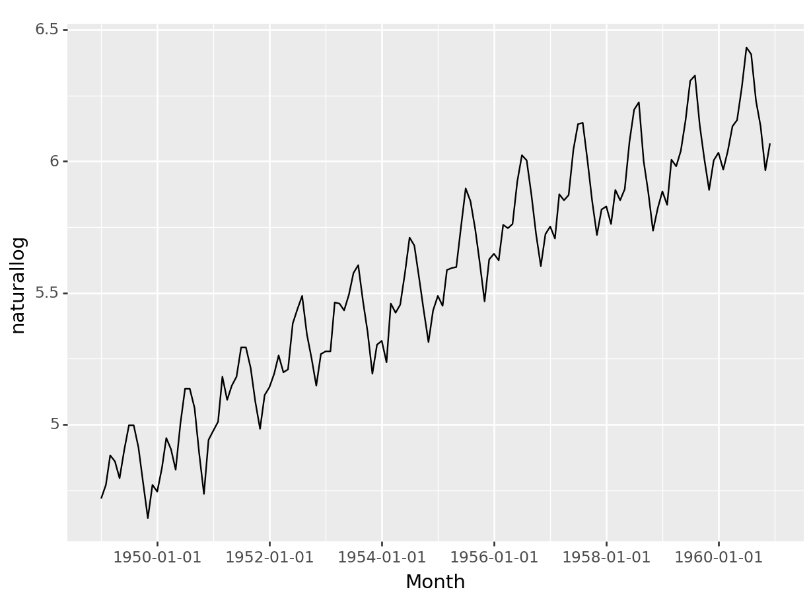

Jan Feb Mar Apr May Jun Jul Aug Sep Oct Nov Dec
1980 7366 7414 7824 7524 8279 8707 9486 8973 8231 8206 7927 7999
1981 7834 7521 8284 7999 8940 9381 10078 9796 8471 8572 8150 8168
1982 8166 7903 8606 8071 9178 9873 10476 9296 8818 8697 8381 8293
1983 7942 8001 8744 8397 9115 9773 10358 9849 9083 9143 8800 8741
1984 8492 8795 9354 8796 10072 10174 11326 10744 9806 9740 9373 9244
1985 9407 8827 9880 9364 10580 10899 11687 11280 10208 10212 9725 9721
1986 9846 9407 10265 9970 10801 11246 12167 11578 10645 10613 10104 10348
1987 10263 9973 10803 10409 11458 11845 12559 12070 11221 11338 10761 11012
1988 10923 10790 11427 10788 11772 12104 12634 12772 11764 11956 11646 11750
1989 11485 11198 12265 11704 12419 13259 13945 13839 12387 12546 12038 11977
1990 12336 11793 12877 11923 13306 13988 14002 14336 12867 12721 12449 12686
1991 12810 12015 12888 12431 13499 13014 14296 14125 12817 12862 12449 12489
1992 12621 12380 13023 12302 13339 13825 14428 14151 13355 13094 12656 12435
1993 13287 12434 13209 12817 13746 14259 14590 14354 13254 13464 13302 13456
1994 13171 12517 13489 12509 13785 13921 14603 14749 13540 13457 13243 13590
1995 13487 12776 13812 13032 14268 14473 15359 14457 DSA 554 3.0 Spatio-temporal Data Analysis
Dr. Thiyanga S. Talagala
Department of Statistics, Faculty of Applied Sciences
University of Sri Jayewardenepura, Sri Lanka
Department of Statistics, Faculty of Applied Sciences
University of Sri Jayewardenepura, Sri Lanka
Time Series
A time series is a sequence of observations taken sequentially in time.
Cross sectional data
Observations that come from different individuals or groups at a single point in time.
Time series data
A set of observations, along with some information about what times those observations were recorded.
Time Series Patterns
Trend
Long-term increase or decrease in the data.
Seasonal
A seasonal pattern exists when a series is influenced by seasonal factors (e.g., the quarter of the year, the month, or day of the week).
Seasonality is always of a fixed and known period.
Cyclic
A cyclic pattern exists when data exhibit rises and falls that are not of fixed period.
The duration of these fluctuations is usually of at least 2 years.
The average length of cycles is longer than the length of a seasonal pattern.
Frequency of a time series: Seasonal periods
Frequency: Number of observations per natural time interval (Usually year, but sometimes a week, a day, an hour)
Your turn:
Identify frequencies for the following:
Annual
Quarterly
Monthly
Weekly
Multiple Seasonal Patterns
For example, the hourly utility demand data exhibit both daily and weekly cycles.

Source: https://www.robjhyndman.com/papers/multiseasonal.pdf
Your turn
Identify multiple frequencies for the followings:
Daily
Hourly
Half-hourly
Minutes
Seconds
Correlation vs Autocorrelation
Correlation
- Measures the strength of the linear relationship between two variables
\[r = \frac{\sum_{i=1}^{n} (x_i -\bar{x})(y_i-\bar{y})}{\sqrt{\sum_{i=1}^{n} (x_i -\bar{x})^2 \sum_{i=1}^{n} (y_i -\bar{y})^2}}\]
Autocorrelation
Measures the strength of linear relationship between lagged values of time series.
\[r_k = \frac{\sum (y_t -\bar{y})(y_{t-k}-\bar{y})}{\sum (y_t -\bar{y})^2}\]
Lagged values: in-class
Autocorrelation plot
Time series with trend only
Time series with seasonality only
Time series with trend and seasonal
Example 1

Example 1 (cont.)
Seasonal plots

Example 1 (cont.)

Example 2

Example 2(cont.)
Seasonal plots

Example 2 (cont.)

Example 3

Example 3 (cont)

Exercise
Question 6 at https://otexts.com/fpp2/graphics-exercises.html
Notation
\[\hat{Y}_{T+h|T}\]
Simple time series forecasting techniques
Average method
Naive method/ random walk method
Seasonal naive method
Drift method
Electricity Demand


Statistical Properties
Mean function
Let \({X_1, X_2, ...}\) be a sequence of time index random variables.
The mean function of \({X_t}\) is
\[\mu_X(t)=E(X_t).\]
Covariance function
The covariance function of \({X_t}\) is
\[\gamma_X(r, s)=Cov(X_r, X_s)=E[(X_r-\mu_X(r))(X_s-\mu_X(s))]\]
for all integers \((r)\) and \((s)\).
The covariance function of \({X_t}\) at lag \((h)\) is defined by \[\gamma_X(h):=\gamma_X(h, 0)=\gamma(t+h, t)=Cov(X_{t+h}, X_t).\]
Autocovariance function
The auto covariance function of \({X_t}\) at lag \((h)\) is
\[\gamma_X(h)=Cov(X_{t+h}, X_t).\] Autocorrelation function
The autocorrelation function of \({X_t}\) at lag \((h)\) is
\[\rho_X(h)=\frac{\gamma_X(h)}{\gamma_X(0)}=Cor(X_{t+h}, X_t).\]
Weekly stationary
A time series \({X_t}\) is called weekly stationary if
\(\mu_X(t)\) is independent of \(t\).
\(\gamma_X(t+h, t)\) is independent of \((t)\) for each \((h)\).
In other words the statistical properties of the time series (mean, variance, autocorrelation, etc.) do not depend on the time at which the series is observed, that is no trend or seasonality. However, a time series with cyclic behaviour (but with no trend or seasonality) is stationary.
Strict stationarity of a time series
A time series \(\{X_t\}\) is called weekly stationary if the random vector \([X_1, X_2..., X_n]\) and \([X_{1+h}, X_{2+h}..., X_{n+h}]\) have the same joint distribution for all integers \((h)\) and \((n > 0)\).
Simple time series models
1. iid noise
no trend or seasonal component
observations are independent and identically distributed (iid) random variables with zero mean.
Notation: \({X_t} \sim IID(0, \sigma^2)\)
plays an important role as a building block for more complicated time series.
import numpy
import matplotlib.pyplot as plt
mean = 0
std = 1
num_samples = 1000
samples = numpy.random.normal(mean, std, size=num_samples)
samplesarray([ 7.71513110e-01, -7.56081700e-01, 9.75803798e-01, 1.80799113e+00,
5.99825035e-01, -1.09014011e+00, -1.74016017e+00, 1.12110989e+00,
2.24330938e+00, -6.19068489e-01, -2.94629341e-02, 6.54747857e-01,
1.27691892e+00, 7.84856395e-01, 4.80694182e-01, -1.56914488e+00,
-4.56072252e-01, 1.94654001e+00, 6.37024706e-01, -2.37893085e+00,
4.74955868e-01, 1.44109532e+00, 1.84657453e-01, 5.41096019e-01,
-2.09750250e-02, 3.68406473e-01, 3.05252964e-02, 1.26798335e-01,
1.31763204e+00, 1.94564936e-01, 4.51382178e-01, -4.74760973e-01,
-5.12687957e-01, 8.75173206e-02, 1.97557546e+00, 3.88218078e-01,
1.66209579e+00, -4.45623775e-01, -1.66488017e-01, -6.89643729e-01,
2.03237938e-01, -1.44946041e+00, 7.97848840e-01, -1.18663135e+00,
2.75845847e-01, 1.04589531e-01, 5.75190824e-01, 1.11060090e+00,
-1.71442193e-01, -5.85035530e-01, 7.59965209e-01, -1.61600755e+00,
-1.83063635e+00, -1.64407037e+00, -2.16949928e-01, -1.28427299e+00,
-9.18938021e-01, 1.11961626e-01, 1.11282601e-01, -1.42762661e+00,
5.89134753e-01, 1.01288342e+00, -1.42558439e+00, -5.36904466e-01,
1.36167657e+00, -4.76949611e-01, 5.74985028e-01, 2.13337331e-01,
4.97013903e-01, 3.05693836e-01, -1.04892700e+00, -1.39805181e+00,
-5.98159901e-01, -8.27930928e-01, 1.44758494e+00, 2.34137315e-01,
-9.65558955e-02, -1.07447188e+00, -1.13059328e+00, 1.70093663e+00,
-1.61296198e-01, -1.96672217e+00, -2.21296028e-01, -1.74050205e-01,
-1.07438863e+00, 8.64925963e-01, -1.09053127e+00, 1.10775415e-01,
5.41448751e-01, 2.14968556e+00, -3.02492054e-01, -1.20926012e+00,
4.74933514e-01, -1.50567757e+00, 1.58465059e+00, -1.02666760e+00,
3.30826847e-01, -3.29913439e-02, 1.21941048e-01, 3.00254229e-01,
-4.49975281e-01, 1.52180828e+00, 1.11864085e+00, -1.71085609e+00,
-9.18340455e-01, 1.70959436e+00, 1.51849708e+00, 2.24497000e+00,
-1.50515189e+00, 4.55060575e-01, 1.61237273e-01, -2.89073763e-01,
-3.13838516e-02, -2.38383959e-02, -3.33160401e-01, -2.21310285e-01,
8.57186547e-01, -4.19098802e-01, 1.68871983e+00, 3.61938510e-01,
8.13134127e-01, 6.91242282e-01, 1.75315830e-01, -2.25582396e-01,
2.18244173e-01, 3.60225014e-01, 2.69900656e-01, 9.56675344e-01,
-1.24628954e+00, 1.07543015e+00, 1.98461870e-01, -1.42215403e+00,
-5.25169289e-01, 1.82494880e+00, 1.64144319e-03, -1.67530027e+00,
1.52299557e+00, -8.31481138e-01, -2.15055506e+00, 6.15893941e-01,
5.05440622e-01, 2.47522129e-01, -1.38574559e+00, 1.82735140e+00,
-1.22646263e-01, -1.88219295e-02, 9.36977321e-01, -1.36987723e+00,
-2.99109776e-01, 9.46891867e-01, 2.57909865e+00, 1.08272808e+00,
-6.32207207e-01, -1.86119625e+00, 6.45937106e-01, 1.58679961e+00,
-2.49051617e-01, 2.03316711e+00, -2.18833787e-02, -4.84911518e-02,
9.08415250e-01, 1.31948932e+00, 6.07337788e-01, -2.10833101e+00,
-5.01360564e-01, -1.54160602e+00, 1.54752576e+00, 7.74770399e-02,
8.95564187e-02, -7.43158136e-01, -6.97890440e-01, -7.60601594e-02,
1.04916243e+00, 1.75769641e+00, -9.87863411e-01, -4.43158783e-01,
3.30061549e-01, -1.05875137e+00, 2.27377016e+00, 1.50584678e+00,
-8.42927360e-02, -7.17746834e-01, -6.45617292e-01, -9.33415423e-01,
6.89838013e-01, 4.63053498e-01, 5.26172170e-01, 6.70246242e-01,
5.83175169e-01, 2.32642970e+00, 7.81478439e-01, -2.28303722e-01,
8.10064915e-01, 5.64060101e-01, 5.79101390e-01, 5.78001661e-01,
-2.16486766e-01, -2.05211483e-01, 2.38854497e+00, 7.84906913e-01,
3.60040238e-01, 1.05073557e+00, 1.36467373e+00, 7.64969763e-01,
1.18571952e+00, 2.83633791e+00, -2.56666344e-01, -5.64648139e-01,
-1.63418130e+00, 2.22591153e-01, 6.45195306e-01, -3.02690564e-01,
1.45566069e-01, -1.96211996e+00, -4.66730747e-01, -2.50887494e+00,
1.68495969e+00, 2.83863392e-01, -6.32171366e-01, 5.22338718e-01,
5.38345953e-01, -9.97221339e-01, -9.85641670e-01, 1.06717508e+00,
2.18418422e+00, -7.37963448e-01, -6.64631752e-02, -1.02503850e+00,
-2.05905770e-01, -2.42261859e+00, 1.42255715e+00, -3.04239215e-01,
-5.00431574e-01, -3.51576541e-01, -6.26237918e-01, -8.05605801e-01,
-2.63217731e-01, 1.57427140e-02, -1.80417494e+00, 1.00750118e+00,
-1.10281218e+00, -5.21625937e-01, -1.17153374e+00, -1.25359883e+00,
-1.52788499e+00, 1.70965617e+00, 7.60369698e-01, -9.99682402e-01,
1.39071850e+00, -8.15222003e-01, 1.08048322e+00, -6.43871085e-01,
2.23819840e+00, 1.34376968e+00, -1.28139222e+00, -2.68871379e+00,
9.13637639e-01, 1.13309532e+00, 2.57260927e-01, 1.89773984e+00,
-6.89123925e-01, 1.13155355e+00, -7.05488720e-01, 5.89461825e-01,
1.28853114e+00, -2.18318026e+00, 3.87015597e-01, -9.62564003e-01,
-5.34796013e-01, -1.27076134e+00, -4.92105553e-01, -9.47280235e-01,
-3.09571926e-01, 8.66228155e-01, -9.82969141e-01, 3.84582914e-01,
-4.82457638e-01, -8.23420207e-02, 1.39821145e+00, 6.66193671e-01,
-1.98526523e-01, 2.95281541e-03, 1.54205451e+00, -1.00097285e+00,
3.55669686e-01, -6.93173885e-02, -1.80272215e+00, -1.41422138e+00,
-1.74880793e-01, 1.68551418e+00, -1.11464315e+00, 7.59179972e-01,
1.06880336e+00, -7.28707768e-01, 9.49919459e-01, 1.49623895e+00,
9.85415898e-01, -4.94769141e-01, -2.71562490e-02, 9.32705611e-01,
5.93166420e-01, -1.08820390e-02, -1.73262312e+00, -1.14655680e+00,
-9.47799307e-01, 9.19644679e-02, 4.03894383e-01, 2.49981484e-01,
-4.41556588e-01, -7.46828821e-01, -4.32614458e-01, 2.26616530e-01,
-8.15422604e-01, 1.00796173e+00, 7.29439399e-01, 1.12743860e-02,
-9.79682024e-01, -1.52420084e+00, 3.51553107e-01, 3.73273447e-01,
2.92018975e-01, -5.70071141e-02, -1.71522543e+00, 2.63819171e-02,
1.81722083e-01, -2.60582517e-02, 1.38895151e+00, 6.70941215e-01,
-1.78769303e+00, 4.45092487e-01, 5.11755512e-02, 8.64820815e-02,
-1.84479572e-01, -1.28684775e-01, -7.75903270e-01, 1.08172179e+00,
6.58520825e-01, -1.05149964e+00, -5.90358710e-01, -4.01371132e-01,
-2.20320355e-01, -5.27225106e-02, 5.83328779e-01, 7.56234077e-01,
-2.78773614e-01, -1.12104374e+00, -5.38177321e-01, -4.01978764e-01,
9.67708491e-01, -1.77378280e+00, 7.47020179e-02, -2.37010037e-01,
1.22671686e+00, 7.49215605e-01, -1.24005328e+00, 6.94411076e-02,
2.48745294e+00, -1.75083480e+00, -2.81352302e-01, -1.69294363e+00,
-2.79495961e+00, 1.67114276e+00, -9.74939700e-02, -2.68588269e-01,
-6.55717750e-01, 2.15958158e+00, 9.89212829e-01, 1.04928426e+00,
-4.63867538e-01, -3.42606347e-01, 5.31079135e-01, 5.51349031e-01,
-6.00952693e-01, -1.42662741e+00, -1.40751114e-01, 3.14830075e-01,
-8.43142585e-01, -1.22289850e+00, -1.31367319e+00, 9.15764623e-01,
1.81991314e+00, 7.31538885e-01, 1.05094987e-01, 1.58329071e+00,
9.27800945e-01, 1.71572248e+00, 1.56750076e+00, -1.02792440e+00,
-6.66525289e-01, 2.31330992e-01, -8.68904668e-01, -3.36342647e-02,
3.29085394e-01, 1.20896284e+00, 1.20304499e+00, 1.62949063e+00,
-3.23685481e-01, 5.09457119e-01, -1.42137563e-01, 1.33627998e+00,
-6.73766581e-01, 1.34694250e+00, -6.03806775e-01, -6.73914670e-01,
-1.28608449e+00, -2.83976060e-01, -3.39822055e-01, -1.99065976e+00,
1.25036026e+00, -5.49732882e-01, -6.52953335e-01, -2.14857042e+00,
-7.01722934e-01, -1.16921832e+00, -9.00620101e-01, -9.10865942e-01,
8.25397960e-01, -5.78061279e-01, -1.29674204e+00, 1.05041409e+00,
1.86010890e+00, 7.18044518e-01, -8.10330962e-01, -9.13411258e-01,
3.79999305e-02, -1.02407693e+00, -1.30696334e-02, -9.69478535e-01,
4.00076579e-02, 3.23157949e-02, -1.16926264e+00, 4.96853336e-01,
-4.10567710e-01, -6.68997262e-01, -7.92153454e-01, 1.76461828e+00,
8.37313465e-01, -4.26030263e-02, -3.55215188e-01, 1.98536376e-01,
2.30226488e-01, -4.70583505e-02, 1.18484805e+00, 8.11609584e-01,
1.93125400e-01, 9.84467613e-01, 2.35620534e-01, 3.35494627e-01,
-2.03133632e+00, 2.15885575e-02, 1.19862619e-01, -1.53416575e+00,
3.21810932e-01, -5.53245305e-02, -1.31869610e+00, 1.04856032e+00,
7.62496578e-01, 6.48691204e-02, -1.29844716e+00, -2.71126204e-01,
2.51049627e-01, -6.20609595e-01, -6.86362638e-01, -2.87783144e+00,
-6.60986488e-01, 1.51812446e+00, -1.09526105e-01, 1.27375904e+00,
1.55069364e+00, -5.13842363e-01, 1.34753153e+00, -3.87881972e-01,
1.05181534e+00, 1.04753296e-01, 8.16634016e-01, -2.55035099e-02,
1.50871936e-01, -1.82300301e+00, 2.01940474e-02, 1.75939889e+00,
-1.18000912e+00, 3.86766248e-01, 3.00406034e-01, -3.39022997e-01,
-1.05223437e+00, -1.71769980e-02, -2.89357808e+00, -1.39069996e-01,
1.85024816e-01, -1.02087463e+00, 2.02734808e-01, 1.16601161e+00,
-1.76017990e+00, 2.92355582e-01, -4.93945810e-01, 1.02842949e-01,
-1.45394592e+00, -4.71619933e-01, 9.08170777e-01, 1.39117540e-01,
-3.87571905e-01, -4.31179256e-01, -7.01334712e-01, 4.94199798e-01,
1.78161289e-01, 4.69660121e-01, -9.05145756e-01, -9.86735192e-01,
-8.16484755e-01, 2.04549906e-01, 5.46407974e-01, -1.16632000e-01,
4.75140682e-01, -1.02455487e-01, 6.50395359e-01, 4.74370682e-01,
-8.84151717e-01, -6.49124288e-01, 6.18590853e-01, -5.44742112e-02,
-1.39262214e+00, 8.33764733e-01, -2.06335418e+00, -9.90784040e-02,
-1.17837599e+00, -5.07444513e-01, 8.57817091e-01, 1.34690182e-01,
-4.84891866e-01, 5.91968174e-01, 9.71269033e-02, 4.17976865e-01,
-4.37377283e-01, 8.45005092e-01, 6.43504433e-01, 1.26605777e-01,
2.41456023e-02, -7.81362959e-01, -1.15227299e-01, -3.89608608e-01,
1.68714893e-01, 1.02675621e+00, -7.19710555e-01, 3.38515881e-01,
6.08427569e-01, -5.26387972e-01, -1.06797753e+00, 3.11539199e-01,
9.46837643e-01, 1.17600578e+00, 7.76447032e-01, -7.00304435e-01,
3.46310896e-01, -1.04461122e+00, 1.14020663e-01, 2.56071553e+00,
-5.34037223e-01, 1.35496372e+00, 1.05115818e+00, 1.70076778e+00,
-1.57342953e+00, 4.06138306e-01, -2.51964621e+00, -4.76055251e-01,
1.87050152e+00, -9.56316772e-01, -5.90078751e-01, 6.14823174e-01,
3.81556329e-01, -1.50225503e+00, -6.63504857e-01, 2.40289453e-01,
7.81707998e-01, -5.76436776e-01, -2.82470868e-01, 4.34699788e-01,
-5.56017199e-01, -1.93902059e-01, -1.75504467e+00, -1.27316412e+00,
5.76342453e-01, -1.02888575e+00, -4.27289267e-01, 1.04147980e+00,
5.64275202e-01, -5.58044442e-01, 2.63365374e-01, 6.70761369e-01,
-1.55910964e-01, -6.54240290e-01, 1.79546477e-01, 1.85821270e-01,
-1.31366976e+00, 4.39340859e-01, 7.46764681e-01, 1.43501705e-01,
1.89625685e+00, 1.22600764e+00, 1.23351217e+00, -8.35776824e-01,
6.58030944e-02, 9.44460399e-01, 1.03712591e+00, 5.29264897e-01,
5.24695825e-02, -4.32164089e-01, -2.44847536e-01, 4.10747877e-01,
1.86331161e-01, -2.91930665e-02, -1.71900161e-01, -1.61891849e-01,
6.75942704e-01, 1.12430836e+00, -9.73020132e-01, -1.59793058e+00,
-9.50897956e-01, 4.35897280e-01, -1.84589052e+00, 5.54984724e-01,
-6.34845583e-01, 3.94045947e-01, -1.30211200e+00, -5.52527199e-01,
1.36618459e+00, 9.61525721e-01, -8.54439194e-01, -9.04026577e-01,
-7.44387284e-01, 5.33408757e-01, -3.06473600e+00, 1.43789980e-01,
1.31682003e-01, 1.16302570e-01, -1.28117705e+00, 9.94494368e-01,
3.27909575e-01, -1.99768118e-01, 2.00507237e-01, -5.12614097e-01,
-8.28821020e-01, -1.00799947e-01, 7.75854297e-01, 1.18565575e+00,
-7.22397664e-01, 1.63322105e+00, -2.37442541e+00, -1.26486518e+00,
-9.18051859e-01, -1.06728254e+00, -1.57850457e+00, 7.49691585e-01,
-2.80853407e-01, 1.14186311e+00, 4.15811174e-01, 1.57488933e+00,
4.15181572e-01, 1.43757570e+00, -1.00914507e+00, 1.11861750e+00,
-7.81440541e-02, -8.32432125e-01, 6.54424383e-01, -1.19608796e+00,
1.24397354e+00, -6.02593215e-01, 1.00683478e+00, 1.83050103e+00,
1.80849358e+00, 6.68696006e-01, 1.14889577e+00, -1.19308029e+00,
-1.27551979e+00, -1.06124339e+00, 1.21572094e+00, 7.29292749e-01,
-1.65988425e+00, -4.04370099e-01, -6.65703056e-01, 3.40225261e-01,
-5.08889287e-01, -1.69872478e+00, -5.72832612e-01, -4.08401447e-01,
-1.43293410e+00, 1.81332685e+00, -7.56226196e-02, 5.92372396e-02,
-6.22156801e-01, 1.05050217e+00, -2.71106921e-01, 5.67958670e-02,
3.60854762e-01, -5.33129631e-01, 6.74071649e-01, 1.20410443e+00,
1.05684061e+00, -7.97090758e-01, -6.97557361e-02, 3.34358000e-01,
-9.92755241e-01, -6.96190400e-02, -1.11374985e+00, 2.56570358e+00,
-6.21631954e-01, 4.56529355e-02, -8.04666315e-01, -3.85928478e-02,
-4.59672819e-01, 5.86269832e-01, -1.32150973e+00, 4.45597334e-01,
-5.08496131e-01, 1.10829971e+00, -1.49483877e+00, -1.40761361e-01,
-1.38647170e-01, -9.39707465e-01, -2.21823279e+00, 1.33995440e-01,
-9.42889746e-01, -4.68693043e-01, -7.77745362e-01, -9.51509918e-01,
-1.28772343e-01, -3.23476460e-01, 4.27964448e-01, -1.56933772e+00,
-1.48756814e+00, -2.39612930e+00, -1.69436777e+00, -8.62505744e-01,
-1.96083827e+00, 4.89316689e-01, 9.81872955e-02, -1.28675016e+00,
9.87958645e-01, -1.09770369e-02, 1.60220140e+00, -2.37390542e-01,
-7.19473019e-01, 1.73741254e+00, -1.16154355e+00, 2.09066951e-01,
2.47932019e-01, -1.21653044e-01, -1.53890448e+00, 3.24846325e-01,
7.71593598e-02, -2.94089225e-01, -1.27764203e+00, -1.75850136e-01,
-8.39753038e-01, 1.21749805e-01, -2.55157001e-01, 1.08833759e+00,
1.25396241e+00, -9.35724678e-01, -6.63010326e-01, 1.55740744e-02,
-8.28738916e-02, 2.46592721e+00, -4.89573287e-02, -5.30033630e-01,
-1.38747910e-01, 1.83082886e+00, 1.00170358e+00, -1.12618532e+00,
1.20422347e+00, 9.65096243e-01, 1.34632060e+00, -6.20320844e-01,
4.64124779e-01, 7.02955316e-02, -1.04815922e-01, -2.24946493e-01,
-1.05391133e-01, -4.19093101e-01, 1.34843192e+00, 3.21774088e-01,
-1.40898722e+00, -3.99393681e-01, -1.13834230e+00, 6.36313380e-01,
1.77193251e+00, 3.47853081e-01, -1.45634263e+00, -4.51833359e-01,
-2.07303746e-01, 1.51838716e+00, -2.28616187e+00, 1.15603073e+00,
-1.51016080e-01, 2.93724612e-01, -8.43015920e-02, 1.96389841e+00,
2.95504464e-01, 2.17590503e-01, -1.34625152e-01, 3.71620907e-01,
7.12216911e-01, -9.06915254e-01, -3.83827319e-01, -8.21368165e-01,
1.47521007e-01, -5.02824593e-01, -4.88595090e-01, -3.12552016e-01,
7.48654029e-01, 1.25493964e-02, 2.09848996e-01, -5.02083309e-01,
-1.08443063e+00, -1.68397093e-01, 3.72556200e-01, -4.04942606e-01,
-2.00622600e+00, 1.22200624e+00, 8.33349301e-01, 4.25040406e-01,
1.88880609e-01, 9.98312267e-01, -6.17572568e-01, 9.79160245e-01,
-1.47444801e+00, 1.08455542e+00, 2.61588088e+00, 1.04721079e+00,
-1.62103252e-01, -4.16097164e-01, 6.32009859e-01, -3.12187141e-01,
-1.94057878e+00, 5.73196958e-02, -2.48118856e+00, 1.10105801e+00,
7.89214931e-01, 6.52646928e-01, 3.74711901e-01, 5.04897846e-01,
-8.44867064e-01, -1.37331827e+00, 2.47882226e-01, 1.66537934e-01,
6.61992181e-01, 1.83169546e+00, 6.15451438e-01, 1.56938131e+00,
-1.13945230e+00, 1.23381791e+00, 1.34248146e+00, -3.34065608e-01,
3.96848023e-01, -2.88807396e+00, -2.54284555e-01, 2.38757940e-02,
1.27634129e-01, -7.91452016e-01, 6.13929631e-01, -4.16697369e-01,
-2.55074069e+00, 8.38026052e-01, 1.55907741e-01, 9.67506953e-01,
1.15966156e+00, 2.01756344e+00, -3.04203919e-01, 1.55895420e+00,
2.85501594e-02, 9.56029518e-01, 2.74939183e-01, -9.73534740e-01,
-2.83317633e-01, -5.96417344e-01, 1.68457794e+00, -2.00432874e-01,
1.18114956e+00, 1.42210163e+00, 7.73953378e-01, 5.07146672e-01,
-8.63251495e-01, -3.45892440e-01, -7.54422216e-02, 1.71121526e+00,
6.64103572e-01, 5.86473464e-01, 1.77336671e-01, 7.02320324e-02,
-2.38978020e+00, 9.82251703e-01, -1.15739350e+00, -4.35176880e-01,
1.16983518e+00, 2.29950802e-01, -4.02554051e-01, -8.67912552e-02,
1.03761050e+00, 7.86436120e-01, 1.30599064e-01, 9.26306266e-01,
-2.38373090e+00, 1.17171474e-02, 6.33639650e-01, -1.38039173e-01,
8.78795842e-01, -1.23675125e+00, 3.24238681e-01, 1.77728920e-01,
2.43515579e-01, -1.76970684e-01, -1.19699501e+00, -4.42637503e-01,
1.06956626e+00, -2.00857777e+00, 9.05785684e-01, -1.12682398e-01,
-2.56560725e+00, -6.32570077e-01, 3.46488210e-01, 1.65506545e+00,
-7.47446683e-01, 2.32904836e-01, 2.88386381e+00, -1.18818656e+00,
1.06296863e+00, 2.28839753e+00, -1.14443046e+00, 2.91972678e+00,
-6.78069128e-01, -1.50864746e+00, 1.91120398e+00, -8.15528197e-01,
2.71653451e-01, 1.13666852e+00, -8.10442468e-01, 2.33134061e+00,
-6.13037283e-01, -2.71739057e+00, -2.57901191e-01, -1.36336418e-01,
3.88048484e-01, 4.07261283e-01, -1.24101135e+00, -8.16770575e-01,
-1.27126630e+00, -2.37590760e+00, 9.05858834e-01, 1.09160120e+00,
6.21772439e-01, 1.26643257e+00, -3.42979238e-01, 9.67222428e-02,
9.19649054e-01, 7.46771672e-01, 1.29421546e+00, -8.26525633e-01,
1.09924758e-01, -3.34136421e-01, -1.95514624e-01, 1.83230010e+00,
-6.36736868e-01, -1.40490484e-01, 5.32123258e-01, -4.38837785e-01,
-1.17249508e+00, -2.59695468e-01, -5.33917652e-01, 1.19555292e+00,
-5.58515711e-01, 6.19524121e-01, -3.29069722e-01, -1.75130934e+00,
3.00882095e-01, 1.57899616e-01, -1.02181664e-02, 5.71310159e-01,
-8.36172697e-02, -1.04384072e+00, 2.89897063e-01, -4.75662385e-01,
2.68437164e-01, -1.62673842e+00, -3.57645756e-01, -2.80140076e-02,
6.04671195e-01, -1.09300212e+00, 1.44894799e-01, -5.62330247e-02,
7.03404931e-01, 3.06374650e-01, -1.36312438e-01, 4.97563111e-01,
-1.44382157e+00, -2.28424523e-01, 8.00088912e-01, -6.47315992e-01,
2.83390061e+00, 1.39595245e+00, 3.96409758e-01, -2.84446343e-01])2. White noise
If \({X_t}\) is a sequence of uncorrelated random variables, each with zero mean and variance \(\sigma^2\), then such a sequence is referred to as white noise.
Note: Every \((IID(0, \sigma^2)\) sequence is \((WN(0, \sigma^2)\) but not conversely.
ACF
White noise implies stationarity. Stationarity does not imply white noise.
3. Random walk
A random walk process is obtained by cumulatively summing iid random variables. If \({S_t, t=0, 1, 2, ...}\) is a random walk process, then \(S_0 =0\)
\(S_1=0+X_1\)
\(S_2=0+X_1+X_2\)
\(...\)
\(S_t=X_1+X_2+...+X_t.\)
Question
Is \({S_t, t=0, 1, 2, ...}\) a weak stationary process?
Identifying non-stationarity in the mean
Using time series plot
ACF plot
ACF of stationary time series will drop to relatively quickly.
The ACF of non-stationary series decreases slowly.
For non-stationary series, the ACF at lag 1 is often large and positive.
Elimination of Trend and Seasonality by Differencing
- Differencing helps to stabilize the mean.
Backshift notation:
\[BX_t=X_{t-1}\]
Ordinary differencing
The first-order differencing can be defined as
\[\nabla X_t = X_t-X_{t-1}=X_t-BX_t=(1-B)X_t\] where \(\nabla=1-B\).
The second-order differencing
\[\nabla^2X_t=\nabla(\nabla X_t)=\nabla(X_t-X_{t-1})=\nabla X_t - \nabla X_{t-1}\]
\[\nabla X_t - \nabla X_{t-1}=(X_t-X_{t-1})-(X_{t-1}-X_{t-2})\] - In practice, we seldom need to go beyond second order differencing.
Seasonal differencing
- differencing between an observation and the corresponding observation from the previous year.
\[\nabla_mX_t=X_t-X_{t-m}=(1-B^m)X_t\] where \((m)\) is the number of seasons. For monthly, \((m=12)\), for quarterly \((m=4)\).
For monthly series
\[\nabla_{12}X_t=X_t-X_{t-12}\]
Twice-differenced series
\[\nabla^2_{12}X_t=\nabla_{12}X_t-\nabla_{12}X_{t-1}\] \[\nabla_{12}X_t-\nabla_{12}X_{t-1}=(X_t-X_{t-12})-(X_{t-1}-X_{t-13})\] If seasonality is strong, the seasonal differencing should be done first.
Non-Stationary Time Series
1. Deterministic trend
\[Y_t = f(t) + \epsilon_t\]
where \(\epsilon_t \sim iid(0, \sigma^2)\), \(t = 1, 2, ...T\)
Mean of the process is time dependent, but the variance of the process is constant.
A trend is deterministic if it is a nonrandom function of time.
Non-Stationary Time Series (cont.)
2. Random walk
\[Y_t = Y_{t-1} + \epsilon_t\]
Random walk has a stochastic trend.
Model behind naive method.
A trend is said to be stochastic if it is a random function of time.
Non-Stationary Time Series (cont.)
3. Random walk with drift
\[Y_t = \alpha+ Y_{t-1} + \epsilon_t\]
Random walk with drift has a stochastic trend and a deterministic trend.
Model behind drift method.
Random walk
\[ \begin{aligned} Y_t &= Y_{t-1} + \epsilon_t \\ Y_1 &= Y_0 + \epsilon_1 \\ Y_2 &= Y_1 + \epsilon_2=Y_0 + \epsilon_1 + \epsilon_2\\ Y_3 &= Y_2 + \epsilon_3=Y_0 + \epsilon_1 + \epsilon_2 +\epsilon_3\\ . \\ Y_t &=Y_{t-1} + \epsilon_t=Y_0 + \epsilon_1 + \epsilon_2 + \epsilon_3 +...+ \epsilon_t = Y_0 + \sum_{i=1}^{t} \epsilon_t \end{aligned} \]
Mean: \(E(Y_t) = Y_0\).
Variance: \(Var(Y_t)=t \sigma^2\).
Random walk with drift
\[ \begin{aligned} Y_t &= Y_{t-1} + \epsilon_t \\ Y_1 &= \alpha+Y_0 + \epsilon_1 \\ Y_2 &= \alpha+ Y_1 + \epsilon_2=2 \alpha+Y_0 + \epsilon_1 + \epsilon_2\\ Y_3 &= \alpha+ Y_2 + \epsilon_3= 3 \alpha+ Y_0 + \epsilon_1 + \epsilon_2 +\epsilon_3\\ . \\ Y_t &= \alpha+Y_{t-1} + \epsilon_t= t \alpha+ Y_0 + \epsilon_1 + \epsilon_2 + \epsilon_3 +...+ \epsilon_t \\ Y_t &= t \alpha + Y_0 + \sum_{i=1}^{t} \epsilon_t \end{aligned} \]
Random walk with drift (cont.)
It has a deterministic trend \((Y_0 + t \alpha)\) and a stochastic trend \(\sum_{i=1}^{t} \epsilon_t\).
Mean: \(E(Y_t) = Y_0 + t\alpha\)
Variance: \(Var(Y_t) = t\sigma^2\).
There is a trend in both mean and variance.
Common trend removal (de-trending) procedures
Deterministic trend: Time-trend regression
The trend can be removed by fitting a deterministic polynomial time trend. The residual series after removing the trend will give us the de-trended series.
Stochastic trend: Differencing
The process is also known as a Difference-stationary process.
Notation: I(d)
Integrated to order \(d\): Series can be made stationary by differencing \(d\) times.
- Known as \(I(d)\) process.
Question: Show that random walk process is an \(I(1)\) process.
The random walk process is called a unit root process. (If one of the roots turns out to be one, then the process is called unit root process.)
Random walk
Random walk - ACF
Difference series
Values Lag 1 Lag 2
0 -0.063752 NaN NaN
1 -2.037790 -1.974039 NaN
2 -2.886342 -0.848552 1.125487
3 -2.519015 0.367327 1.215879
4 -3.512589 -0.993574 -1.360901
.. ... ... ...
95 -17.655856 -0.647412 0.220374
96 -17.233299 0.422557 1.069969
97 -16.828910 0.404388 -0.018169
98 -17.652829 -0.823919 -1.228307
99 -20.292997 -2.640168 -1.816249
[100 rows x 3 columns]Plot Lag 1 series
ACF Lag 1 series
Example 2
import numpy as np, pandas as pd
from statsmodels.graphics.tsaplots import plot_acf, plot_pacf
import matplotlib.pyplot as plt
plt.rcParams.update({'figure.figsize':(9,7), 'figure.dpi':120})
# Import data
df = pd.read_csv('wwwusage.csv', names=['value'], header=0)
# Original Series
fig, axes = plt.subplots(2, 2, sharex=True)
axes[0, 0].plot(df.value); axes[0, 0].set_title('Original Series')
plot_acf(df.value, ax=axes[0, 1], lags=np.arange(len(df)))
# 1st Differencing
axes[1, 0].plot(df.value.diff()); axes[1, 0].set_title('1st Order Differencing')
plot_acf(df.value.diff().dropna(), ax=axes[1, 1], lags=np.arange(len(df) - 1))
plt.show()2nd order differencing
Variance stabilization
Eg:
Square root: \(W_t = \sqrt{Y_t}\)
Logarithm: \(W_t = log({Y_t})\)
This very useful.
Interpretable: Changes in a log value are relative (percent) changes on the original sclae.
Monthly Airline Passenger Numbers 1949-1960
Monthly Airline Passenger Numbers 1949-1960 - log
Box-Cox transformation
\[ w_t=\begin{cases} log(y_t), & \text{if $\lambda=0$} \newline (Y_t^\lambda - 1)/ \lambda, & \text{otherwise}. \end{cases} \]
Different values of \(\lambda\) gives you different transformations.
\(\lambda=1\): No substantive transformation
\(\lambda = \frac{1}{2}\): Square root plus linear transformation
\(\lambda=0\): Natural logarithm
\(\lambda = -1\): Inverse plus 1
Balance the seasonal fluctuations and random variation across the series.
Box-Cox transformation
Box-Cox transformation: Exploring the output
array([ 6.82749005, 6.93282224, 7.16189151, 7.11461078, 6.98378687,
7.20826542, 7.39959794, 7.39959794, 7.22352834, 6.94993188,
6.67930112, 6.93282224, 6.88074148, 7.0663838 , 7.29843847,
7.20826542, 7.05009066, 7.41371485, 7.69297755, 7.69297755,
7.53726005, 7.17744836, 6.86312389, 7.28363955, 7.35675408,
7.42775127, 7.791663 , 7.6033268 , 7.71801394, 7.791663 ,
8.03379957, 8.03379957, 7.86322651, 7.59025293, 7.3711186 ,
7.64214252, 7.70552693, 7.81574285, 7.96693012, 7.82769741,
7.85143867, 8.23478523, 8.35415797, 8.46833738, 8.14152446,
7.94424651, 7.71801394, 7.97819691, 8.00058286, 8.00058286,
8.41186604, 8.40233549, 8.34441554, 8.47763304, 8.66568618,
8.73398286, 8.42136224, 8.16254066, 7.81574285, 8.05570781,
8.08822445, 7.90983871, 8.40233549, 8.32482145, 8.39277032,
8.66568618, 8.97573698, 8.90544371, 8.62209995, 8.34441554,
8.0774311 , 8.34441554, 8.46833738, 8.38317027, 8.69150146,
8.70857469, 8.71707079, 9.07418456, 9.41661628, 9.30252389,
9.05177744, 8.75078932, 8.42136224, 8.78409104, 8.83328615,
8.77580407, 9.08902184, 9.0592668 , 9.0964106 , 9.48162515,
9.72179099, 9.67415098, 9.35679401, 9.00640692, 8.72554012,
9.00640692, 9.07418456, 8.96801544, 9.36350433, 9.30936559,
9.35679401, 9.77445522, 10.01359054, 10.02424732, 9.66813973,
9.30252389, 8.9987716 , 9.22613489, 9.25415593, 9.0964106 ,
9.40343224, 9.30936559, 9.41003199, 9.84886109, 10.14918625,
10.21968352, 9.66813973, 9.38353935, 9.03673716, 9.23316669,
9.390186 , 9.26806127, 9.68014959, 9.61958794, 9.76283534,
10.05072014, 10.426264 , 10.4768849 , 10.00289463, 9.68613564,
9.40343224, 9.67415098, 9.74531682, 9.58881702, 9.75700771,
9.99215929, 10.05072014, 10.36531089, 10.75145254, 10.68404894,
10.23457308, 9.99215929, 9.58262264, 9.83186035])Linear Time Series Analysis
Autoregressive Models
\(Y_t = \alpha + \phi_1 Y_{t-1} + \phi_2 Y_{t-2} + \dots + \phi_p Y_{t-p} + \epsilon_t\)
Where:
\(Y_t\) is the value at time \(t\)
\(\alpha\) is a constant,
\(\phi_1, \phi_2,...\phi_p\) are the parameters,
\(\epsilon_t\) is white noise (error term),
\(p\) is the order of the AR model.
In-class: Properties of AR(1) process
Derive
Mean
Variance
Covariance
Autocorrelation function of an AR(1) process
In-class: Properties of AR(2) process
Derive
Mean
Variance
Covariance
Autocorrelation function of an AR(2) process
In-class: Properties of AR(P) process
Derive
Mean
Variance
Covariance
Autocorrelation function of an AR(P) process